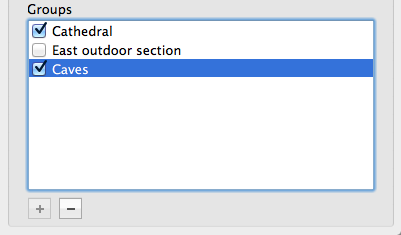

Keeping an Overview
Sometimes, the 3D view can get cluttered in maps with a lot of detail or many entities. That's why there are several options to reduce the amount of objects in the 3D view. You can select between textured, flat and wirefame rendering, you can filter the 3D view so that only certain objects are rendered, you can isolate the current selection and finally you can create brush groups.
Render Modes

You can choose from three render modes in TrenchBroom in the View tab of the inspector. The following modes are available:
- Textured - All faces are rendered with their textures.
- Flat - All faces are rendered with the average color of the texture.
- Wireframe - Faces are not rendered at all.
Selection Isolation
Very often, you'll want to isolate the selected objects to edit them with more ease in the 3D view. TrenchBroom provides three isolation modes which you can toggle either in the view tab of the inspector, by choosing View » Isolate Selection from the menu or by hitting ⌘I. See the following screenshots for an example.

The selection isolation modes are
- None - Selection isolation is deactivated.
- Wireframe - Everything but the selected objects is rendered in wireframe mode.
- Discard - Only the selected objects are rendered at all.
Note that in Wireframe and Discard mode, you can't select other objects by clicking on them. The editor will deactivate selection isolation if you deselect all objects or if you delete the selected objects.
Render Filters

You can select the types of objects which should be rendered in the 3D view by using the render filters in the View tab of the inspector. There are five checkboxes in the Filter section:
- Entities - Render entities in the 3D view.
- Brushes - Render brushes in the 3D view.
- Classes - Render entity classnames in the 3D view.
- Origin - Render origin of the coordinate system in the 3D view.
- Guides - Render the selection size guides in the 3D view.
Unchecking a checkbox will remove the appropriate type of object from the 3D view.
Groups
Once your map reaches a certain size, it can be very useful to create brush groups. A brush group is a special brush entity that is ignored by the BSP compiler - its only use is to reduce clutter in the editor. In TrenchBroom, brush groups are listed in the Map tab of the inspector.
To create a new brush group from the current selection, click on the plus button below the group list. To delete a brush group, select the group you want to delete in the group list and click on the minus button.
To activate one or more brush groups, check them in the group list. If any brush group is active, only the brushes belonging to this group are rendered in the 3D view.
Newly created brushes are added to the selected brush group if any of them is activated. If no brush group is activated, newly created brushes are not added to any group. If no brush group is selected, but at least one is activated, the newly created brushes are added to the activated brush group which was created last. Note that entities cannot be added to groups, so they are always rendered regardless.